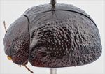
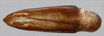
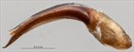
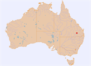

Click on images to enlarge
{kind=link}

Male, Miles, southern Queensland
{kind=link}

Aedeagus, dorsal view (Miles, southern Qld)
{kind=link}

Aedeagus, lateral view (Miles, southern Qld)
{kind=link}

Distribution
Name
Trachymela sp. Ta93
Reference specimen
2002-039, Yuleba State Forest, Miles, southern Queensland.
Adult Description
Length: ♂ 5.0–5.7 mm (n=2), ♀ ? mm (n=0).
Colouration:
- Head: Frons dark reddish-brown, clypeus black, with the black sometimes extending a little past fronto-clypeal suture, labrum black, mandibles completely black; antennomeres 1–2 light brown, 3–11 grading darker towards outer segments, sometimes outer segments black.
- Pronotum: Mostly nitid dark reddish-brown, fractionally darker than head, anterior margin between eyes broadly black, the black colour sometimes extending halfway towards posterior edge on disc, a small, round black area sometimes present in centre of foveal depression.
- Scutellum: Black.
- Elytra: Mostly nitid black, with some slightly paler, dark reddish-brown patches mostly along lateral margin and anterior margin, humeral callus black.
- Venter & Legs: Black, with some slightly paler areas present towards lateral extremes of mesoventrite, metaventrite, and abdomen, inside surface of elytral epipleura black.
- Cuticular Wax: Unknown.
Morphology:
- Head: Punctures moderately large (pd ≈ 1.5–2× ef), slightly unevenly distributed, longitudinal interstitial ridges sometimes obscuring punctures; antennae moderately long (AL/BL: ♂ 37–38%, ♀ ?%), filiform.
- Pronotum: Almost evenly curved transversely, fovea only apparent in anterior half of pronotum, where it is relatively well defined; a prominent, slightly elevated round pustule which is less densely punctured than surrounding area situated behind centre of eye midway between anterior and posterior edges, with the pronotal surface elevated noticeably in surrounding area; discal area with surface relatively smooth and nitid, punctures similar in size to those on head but sometimes quite shallow, usually more deeply impressed along rear margin, evenly to slightly unevenly and moderately densely to more sparsely distributed (spacing ≈ 2–3 pd), becoming much coarser towards lateral margins. Front margins join lateral margins in a smoothly rounded right angle, with lateral margin initially almost straight or curving almost imperceptibly and smoothly towards rear margin with the curvature becoming greater in posterior third, broadest about 2/3 of distance to posterolateral angle.
- Scutellum: Smooth, punctured with punctures similar to or slightly finer than on adjacent surface of pronotum, but usually less deeply impressed.
- Elytra: Surface evenly curved, punctures surrounded by convex interstices, closely spaced, clearly impressed and quite evenly distributed except around the flat elytral summit where they are very fine; interstices slightly thickened in places to form small or moderate-sized, very slightly elevated areas, with small, round and more prominently elevated verrucae scattered among these, some with very fine central punctures, but with no clear arrangement in series; posterior third of elytral suture carinate, posterior section of marginal area very weakly concave, surface continuous or rarely very slightly discontinuous under humeral callus. Vertical extension of epipleura moderate (HCE/PW = 0.36–0.37).
- Venter: Prosternal process almost parallel or narrowing very slightly anteriorly, lightly closed or open anteriorly; prosternal process and mesoventrite with a scatter of long setae, a single long seta present on anterior, median, and posterior trochanters; front edge of metaventrite bevelled, broadly rounded; inner edge of posterior of epipleurae lacking setae.
Male Genitalia (Aedeagus):
- Dimensions: Moderately long (LPE/BL = 33–35%), lanceolate.
- Dorsal view: Shaft widest near basal sulcus with sides initially converging uniformly and very gradually to just behind level of ostium, from where rate of convergence increases fractionally; dorsal surface membranous with a very short dorso-median channel present, surface posterior to ostium with a shallow concavity; ostium in shape of a long oval with dorsal ostial processes not quite extending as far as spatula; spatula relatively long, tip triangular.
- Lateral view: Ventral surface of shaft curved relatively evenly over much of length, thickness decreasing gradually from basal sulcus to apex, tip deflexed.
Immature Stages
Unknown.
Similar species
- Ta92: Superficially similar and similarly-sized species that occurs over the same area as Ta93. It differs in the texture of the elytra – whereas Ta93 has clearly elevated areas and verrucae, those of Ta92 are barely elevated at all, with much of the surface seeming smooth and flat and “elevated” areas in all but posterior third of elytra appearing more as black areas on an otherwise flat surface. The antennae of Ta92 are usually almost uniformly light- to mid-brown in colour, never grading to black at the distal end.
- Ta94: A species that is remarkably similar in appearance. Individuals are slightly larger than those of Ta93, tend to be a lighter shade of brown and lack its nitid sheen, and neither the clypeus nor inner epipleura are black. The aedeagus of the two species is essentially identical in structure, but that of Ta94 is about 10% shorter as a proportion of body length. Since only two specimens of each are currently available for these species, there is a possibility that they are conspecific, albeit with an unusually large size range.
Notes
- Taxonomy: A member of the triangulum group, with a lanceolate aedeagus. A very dark and nitid species.
- Distribution & Abundance: No female of this species is known, and both male specimens were caught at mercury-vapour (M.V.) light, so nothing is known of host preferences of this species.
Copyright © 2026. All rights reserved.